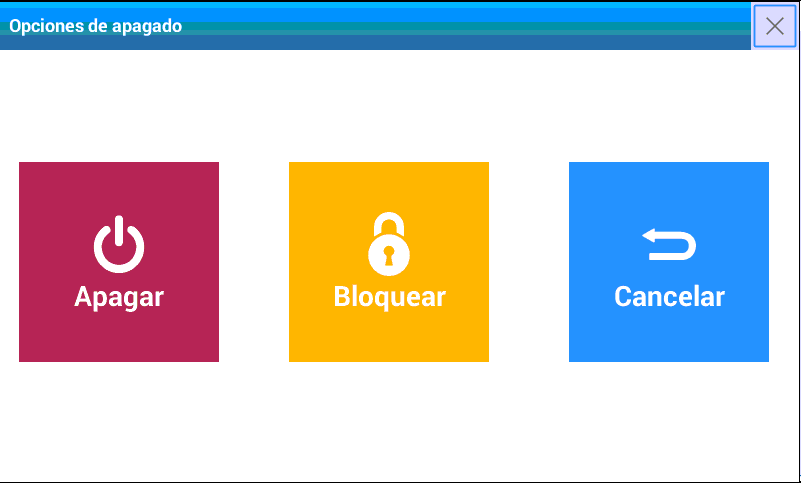

Turn ON and turn OFF
After plugging in the equipment to the power source, you will only need to press the key to turn it on.
Once this action has been done, the equipment will automatically adjust itself to the Zero reference point (this can take a few seconds).
Once this operation has been finished, the scale will be ready to be used. It is important that the equipment is stable during this process. If you touch the platter, the process will start again. To turn it off press and hold the key , until you see the turned off sign and confirmation sound.

- Turn off: Safely turn off the equipment.
- Lock: It allows you to access a pattern screen to allow you to clean the equipment or to simply not allow the use of the equipment while you are absent.
- Cancel: It returns to the main screen.
- X: It returns to the main screen.